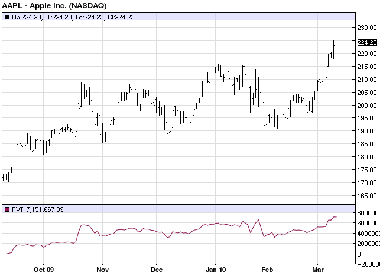

Indicator Type: Standalone
Price By Volume is a horizontal histogram that overlays a price chart. Price and Volume Trend (PVT) is a variation of On Balance Volume, used to determine the strength of trends and warn of reversals.
The histogram bars stretch from left to right starting at the left side of the chart. The length of each bar is determined by the cumulative total of all volume bars for the periods during which the closing price fell within the vertical range of the histogram bar.
Calculation
PVT is calculated by multiplying the day's volume by the percentage change from yesterday's close and adding this value to a cumulative total. For example, if a stock closed up 0.5% and volume was 10,000 shares, you would add 50 (i.e., 0.005 X 10,000 = 50) to the PVT. If the stock had closed down 0.5 %, you would subtract 50 from the PVT.
Sample Chart:

Calculation
The steps in the Price and Volume Trend calculation are:
Calculate
the Percentage Change in closing price:
( Closing Price
[today] - Closing Price [yesterday] ) / Closing Price [yesterday]
Multiply
the Percentage Change by Volume:
Percentage Change * Volume
[today]
Add
to yesterday's cumulative total:
Percentage Change * Volume
[today] + PVT [yesterday]
Interpretation
When the PVT falls money is flowing out of this market (falling prices accompanied by increased volume).
When the PVT rises money is flowing into this market (prices and volume are increasing together).
PVT is a leading indicator for future price movements. Although interpretation of PVT is similar to the OBV and the Accumulation/Distribution indicators, PVT more accurately demonstrates the flow of money. PVT adds only a proportional amount of volume to the indicator, whereas OBV adds the same amount of volume not considering whether the market closes up a fraction of a point or triples in price.
Rising PVT means new money, sometimes referred to as "smart money, " is flowing into the marketplace. The result will be that the present trend will continue. Accelerating PVT rise indicates that "the masses" are joining the new price trend.
If the PVT then levels off, it is often an early warning that the trend is finishing.
Declining PVT indicates that the smart money is liquidating.
If the PVT moves sideways or falls while the price is rising, the increase in price is not confirmed and a market top or bottom may be indicated.
Signals
The main signal offered by the PVT indicator is divergence from price.
In the example charted above, bullish divergence was seen on two separate occasions -- with the PVT trending higher while prices trended lower -- followed by strong price increases in both cases.